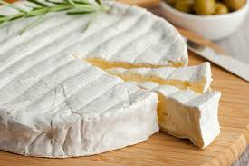

Cheddar

A relatively hard cheese originating in Cheddar, England. One of the most popular cheeses in the world. Cheddar tends to have a sharp and pungent flavor, with a tendency to melt in your mouth.
Brie
A soft French Cheese, made mostly of butterfat. The outside layer is firm, and the inside cheese is bouncy and resilient. Sold only in wheels.
Swiss

A yellow cheese known for its distinct holes. Not from Switzerland, actually an American version of the Swiss Emmental. Has a mild and sweet flavor.
Parmesan

A highly adaptable Italian cheese. Commonly added to pasta and soups. Has a hard, gritty texture, but is fruity and nutty in taste.
Gouda
A creamy, yellow cheese from the Netherlands. One of the most popular cheeses in the world due to its wide range of flavors, ranging from mild and creamy to caramel-like.
Feta
A Greek cheese well known for being crumbly. Traditionally made of sheep's milk. A unique flavor, being tangy, slightly salty, and mildly sour.